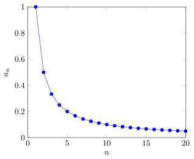

Limit of a Sequence¶
Definition¶
Let A sequence converges to if for every there exists an such that for every we have In this case, the sequence is called convergent, and is called its limit. We write
If no such exists, the sequence is called divergent.
Interpretation¶
The limit of a sequence describes the value approached by its terms as the index increases.
It formalises convergence using eventual closeness.

Key Results¶
- Limits of sequences are unique when they exist.
- Every convergent sequence is bounded.
Enrichment: non-assessable in 2026-27
Every convergent sequence is a Cauchy sequence, and over the converse also holds. The Cauchy criterion is optional enrichment in Math I and is not part of the assessable sequence-limit core.
Examples¶
- The sequence does not converge.
Prerequisites¶
Related Concepts¶
- Cauchy Sequence
- Bounded Sequence
- Limit at Infinity
- Monotone Convergence Theorem
- Squeeze Theorem for Sequences
- Convergence in a Metric Space
- Monotone Sequence
- Sequence
- Subsequence
Sources¶
- Math I: Calculus · Lecture 3
Aliases: sequence limit, convergent sequence, convergence of a sequence
Last updated: 31 August 2026 11:00